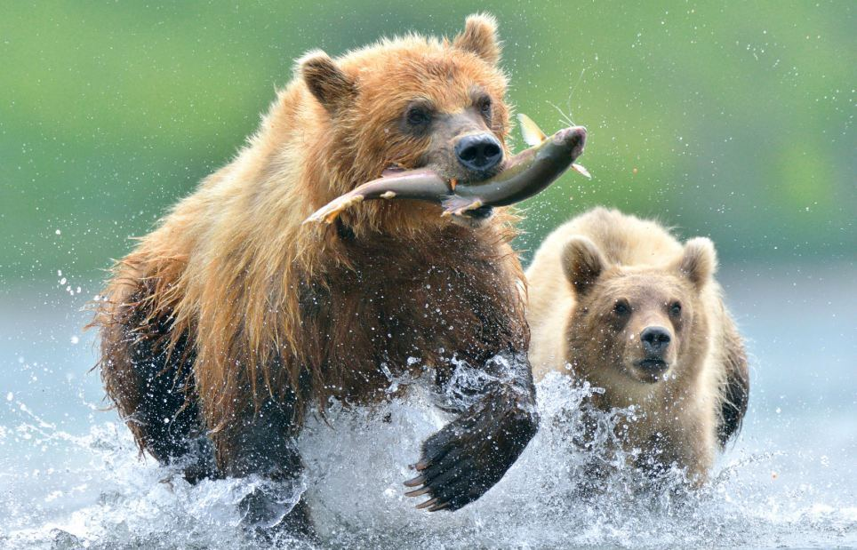
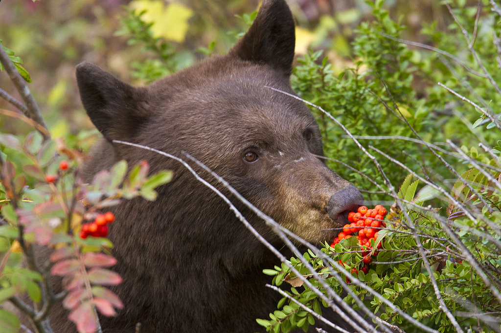
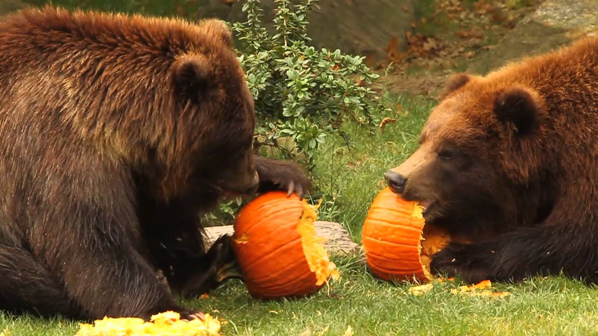

Pożywienie
Jeśli chodzi o dietę, niedźwiedź brunatny nie jest wybredny. Należy do zwierząt na prawdę wszystkożernych - nie gardzi jagodami, ślimakami, jajami ptaków, dżdżownicami, nasionami, ale także większą leśną zwierzyną, którą bez trudu dogania, mimo, iż pozornie jest ociężały. Jego niewybredność sprawia, iż jest najszerzej rozpowszechnionym gatunkiem niedźwiedzi - występuje w Europie Północnej, Azji i Ameryce Północnej. Dawniej zamieszkiwał całą Europę, jednak w znacznej jej części został wytępiony. Obecnie ilość niedźwiedzi brunatnych na świecie szacuje się na ok. 200 tysięcy.
Mimo iż niedźwiedź brunatny jest drapieżnkiem (największym europejskim) to jest wszystkożerny. Jego szczęka jest specyficznie zbudowana, uzębienie ma silne, przystosowane do miażdzenia pokarmu, posiada duże kły, ale zęby policzkowe dość płaskie i szerokie korony służące do rozgniatania pokarmu roślinnego.
Dieta bieszczadzkich niedźwiedzi została zbadana, 73% jego pokarmu stanowią rośliny. Menu jest uzależnone od pory roku. Wiosną (marzec-maj) posilają się trawami i ziołami, które o tej porze mają dużo białka oraz mięsem jeleniowatych, przy czym w marcu dość dużą część jego pokarmu stanowią zeszłoroczne orzeszki bukowe. Latem podstawą pożywienia są czarne borówki, trawy i zioła oraz gryzonie i owady. W przeciwnieństwie do osobników żyjących w innych regionach Beskidów, jesienią bieszczadzkie niedźwiedzie spożywają małą ilość czarnych jagód. Jest to związane z tym, że owoce te są masowo zbierane przez okoliczną ludność. Takie pozyskiwanie uszczupla bazę pokarmową misiów.
Głównym jesiennym pokarmem są owoce dzikich jabłoni i grusz, tarniny oraz orzeszki bukowe. Przed snem zimowym niedźwiedzie cechuje duży apetyt, gdyż gromadzą zapasy tłuszczu na zimę. Bieszczadzkie misie bardzo chętnie korzystają z karmy wyłożonej przez myśliwych. Zwierzęta żyjące w pobliżu upraw rolnych wiosna chętnie zjadają rośliny uprawne np. młody owies, a jesienią korzystają z płodów rolnych np. buraków i kukurydzy.